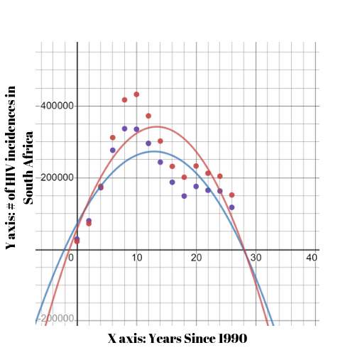

HIV Awareness
Welcome to our group's website!.
Welcome!
HMW ?'s and Answers
- How might we encourage sexually active youth to get tested for HIV?
- How might we help HIV positive people feel safe to come forward for emotional help?
- How might we create a judgment-free environment for HIV positive people?
- How might we make HIV testing accessible in developing countries?
- (1)We can encourage sexaully active youth to get tested for HIV by making clinics/testing more welcoming
- (1)Another way is by making ads for getting tested
- (2)We can help HIV positive people feel safe to come forward for emotional help by having people who got the help support the person
- (3)We can create a judgement-free environment for HIV positive people by making creating a safe space for them to recieve help
- (4)We can make HIV testing accessible in developing countries by making clinics available with HIV testing
Graphs

The graph above is Graph A. The graph above is Graph B. Graph A represents HIV incidence worldwide (diagnosis) numbers from 1990. Graph B represents HIV incidence numbers in South Africa.
Graph A is comparing the rate of diagnosis by all gender from 1990 (year 0) to 2016. In math, we analzyed what function closely represents the trend, and what could possibly happen in the future.The number of diagnosis spiked in the mid 90's eventually coming down, until the incidence rate spiked in the late 2000's early 2010's, since then, the rate of incidence has been decreasing. Based on what we saw, there will be less than 1 million diagnosis by 2030, due to the graph decreasing in incidence rates.

This graph, Graph B represents the incidence rates in South Africa since 1990 as 2 seperate lines, red corresponds to female and blue corresponds to male. It is also more closely modeled as a quadratic function, as the number of incidence in South Africa is decreasing. Throughout the graph, the height of the crisis was in the early 2000's. recently in the early 2010's there was a bit of a spike in incidence, but since then it has been going down.